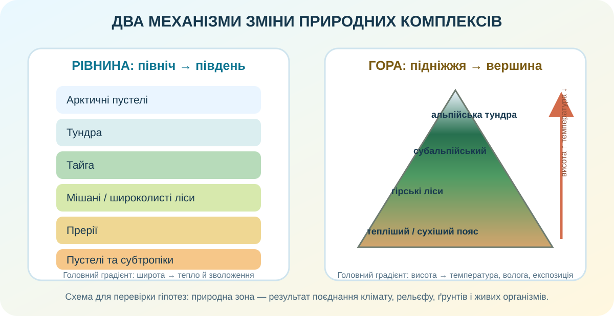

1. Гіпотеза: широта пояснює все?
На рівнинах природні комплекси часто змінюються з півночі на південь. Але чи достатньо тільки широти, щоб пояснити карту Північної Америки?
2. Реальна карта: побачте екологічну мозаїку
CEC: екорегіони Північної Америки ↗ CEC: Landsat land cover 2020 ↗
Арктичні острови, тундра, бореальні ліси. Що спільного в енергетичному балансі?
Ліси змінюються преріями. Чи можна це пояснити лише широтою?
Пустелі лежать на широтах, де на сході значно вологіше. Чому?
CEC використовує гармонізовану систему екорегіонів Канади, США і Мексики; Level I поділяє материк на 15 великих екологічних регіонів.
3. Інтерактив: що сильніше — широта чи зволоження?
Сценарій A
Дві точки лежать приблизно на 40° пн. ш. Одна — біля Атлантики, інша — у внутрішньому районі за Кордильєрами.
Оберіть твердження.
Сценарій B
На західних схилах гір повітря підіймається, охолоджується й віддає вологу; за хребтом формується сухіша «тінь».
Оберіть механізм.
4. Гори: підйом угору як подорож на північ

Rocky Mountain National Park
Служба національних парків США виділяє тут монтанний, субальпійський та альпійський пояси. У парку висоти змінюються приблизно від 2390 до 4346 м, а альпійська тундра починається біля 3350–3500 м залежно від експозиції.
Механізм
З висотою температура загалом знижується, змінюються опади, тривалість вегетаційного періоду, сніговий режим і ґрунти. Тому на одному схилі можна перетнути кілька природних комплексів за десятки кілометрів.
5. Реальні супутникові дані: карта ≠ фотографія
Карта екорегіонів узагальнює складні комплекси, а супутник показує фактичний покрив поверхні. Відкрийте сучасний шар Landsat у North American Environmental Atlas і порівняйте з NASA Worldview.
NASA Worldview ↗ Copernicus Browser ↗
6. Коротке відео з КТП
7. Ваш висновок перед теорією
Сформулюйте власне правило розміщення природних зон Північної Америки. Обов’язково згадайте рівнини, Кордильєри та роль зволоження.
9. CER: доведіть, а не просто назвіть
Claim: чому природні зони материка не можна пояснити одним чинником?
Evidence: наведіть 3 незалежні докази: CEC, рівнина, Кордильєри.
Reasoning: зв’яжіть докази з механізмами широтної зональності та вертикальної поясності.
10. Домашнє завдання
Опрацюйте §47 та створіть «подвійну картку доказів»: одна природна зона рівнин + один вертикальний пояс Кордильєр. Для кожного вкажіть місце, кліматичний чинник, рослинність і один доказ із карти або супутника.
11. Тест /10
Спершу введіть дані. Тест відкриється тільки після заповнення всіх полів.
Джерела
Commission for Environmental Cooperation — North American Environmental Atlas, Terrestrial Ecoregions Level I та North American Land Cover 2020; U.S. National Park Service — Rocky Mountain National Park, Natural Features & Ecosystems та Alpine Tundra Ecosystem; OpenStreetMap; NASA Worldview; Copernicus Data Space Ecosystem. Навчальний відеоматеріал і §47 — за ресурсами КТП.